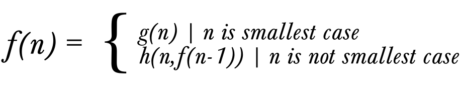
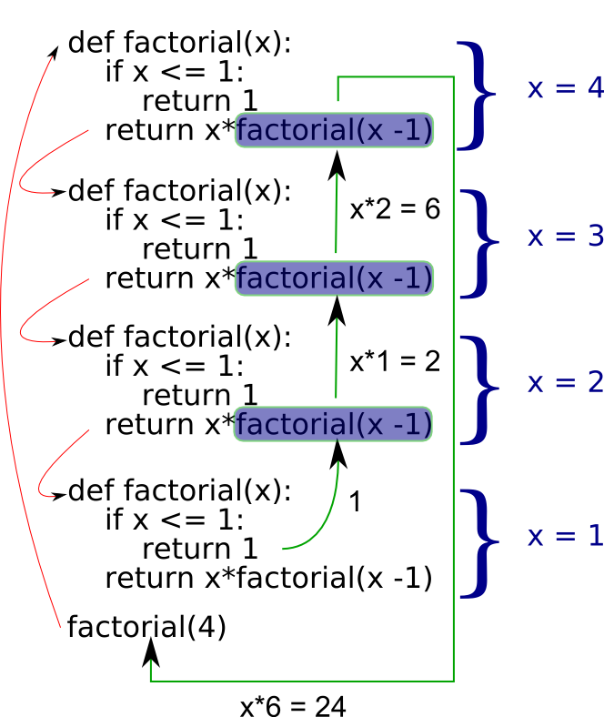

Recursion is a general technique for tackling large problems. It works by identifying problems that are larger cases of the same problem, and how to solve the larger case in terms of the smaller case. The smallest case of the problem is usually trivial to solve. More formally, we define a recursion as any definition (function, or data structure) that is defined in terms of itself.
Think of a branch on a tree. We could say that a branch is a straightish piece of wood, from which various smaller branches extend. Note the fact that in defining a branch, we've used the term 'branch'. We have defined branch in terms of itself. Of crucial importance though is that we've defined branch in terms of smaller instances of itself. Ultimately we'll get to the point where the branch becomes a twig (i.e. a very small branch) which has no branches extending from it.
How many ways are there to arrange six marbles of six different colours in a line?
A simple question? Perhaps! Let's approach it in the programming way. Break it down into smaller problems. How many ways are there to arrange one marble? One. Two marbles? Two. Three marbles? Three? No! If we have red, green, and blue marbles, we can order them like so: RGB, RBG, GRB, GBR, BRG, and BGR. That's six ways. We work this out mathematically as follows; How many colours can go in the first position? 3. Given the fact that one marble has been removed from the choice, how many choices of colour do we have for the second position? 2. That yields six choices so far (3 times 2). There is only one marble for the final position; it's colour is already determined by the previous two choices, so we multiply simply by 1.
So what we've done is we've taken three positions _ _ _
and filled them up with their respective number of choices, 3 2
1 and multiplied the whole lot. Now let's write a python
function to calculate the number of choices for one marble, the
simplest case.
#A function to calculate how many possible ways there are to order
#n marbles of different colours.
def numorders():
return 1
Easy, but what about 2 marbles? Well we know that we need to multiply the number of choices in the first position by the number of choices in the second position, so we get
#A function to calculate how many possible ways there are to order
#n marbles of different colours.
def numorders(num_marbles):
if num_marbles == 2:
return 2*1
else:
return 1
Still simple, let's go to three.
#A function to calculate how many possible ways there are to order
#n marbles of different colours.
def numorders(num_marbles):
if num_marbles == 3:
return 3*2*1
if num_marbles == 2:
return 2*1
else:
return 1
Alright, this is already getting tedious, time to get lazy-smart. If
we look at the condition for 3 when we call numorders(3),
we get 3*2*1. But 2*1 is
what we get when we call numorders(2). Similarly
2*1 could be rewritten 2*numorders(1), so why
not do the following
#A function to calculate how many possible ways there are to order
#n marbles of different colours.
def numorders(num_marbles):
if num_marbles == 3:
return 3*numorders(2)
if num_marbles == 2:
return 2*numorders(1)
else:
return 1
Now suppose we want to extend our function to deal with many
marbles. If 'n' is the number of marbles, we already notice the pattern
that numorders(n) can be written as
n*numorders(n-1). Except in the case of 1.
numorders(1) simply returns one.
#A function to calculate how many possible ways there are to order
#n marbles of different colours.
def numorders(num_marbles):
if num_marbles > 1:
return n*numorders(n-1)
else:
return 1
There is in fact a name for this function in mathematics. It is known as the factorial, and represented using '!', as in the factorial of n is written as 'n!'.
Now that we've got our heads around our first recursion, let's look at recursion somewhat analytically. Every recursion contains two parts. The first is the simplest case. This is something that is directly solvable without referring to smaller cases of the same problem. In our factorial example, it was the case of 1. The factorial of one is one, essentially by definition. If a recursion does not have this simplest case, it will never stop. We will get what is known as an infinite recursion. As the simplest case is exactly that, simple, it is often easiest to establish the simplest case first, and work out how to solve it. This gives the ideal platform for the next task.
Once we have the simple case worked out, we wish to express the next most simple case in terms of the simple one, generally. This is the core of recursion. The expression of a problem in terms of it's parameters, and the same problem with smaller or simpler parameters.
 